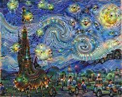
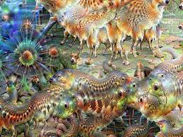
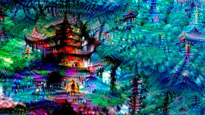

IA
1Inteligencia artificial
La inteligencia artificial (IA) es la capacidad de una máquina de realizar tareas que requieren inteligencia humana, como el reconocimiento de patrones, el aprendizaje automático y la resolución de problemas. La IA se logra mediante el uso de algoritmos y técnicas de aprendizaje automático para permitir que las máquinas " aprendan " y mejoren en el rendimiento de ciertas tareas sin ser explícitamente programadas para realizarlas. La IA es un campo de estudio interdisciplinario que incluye elementos de la informática, la psicología, la filosofía y otras disciplinas.
Que es
2Que puedes hacer con la IA
Las aplicaciones de la inteligencia artificial son muy variadas y están en constante crecimiento y desarrollo. Algunas de las aplicaciones comunes de la IA incluyen:
- Asistencia virtual: sistemas de asistencia que pueden responder a preguntas y realizar tareas simples para ayudar a los usuarios.
- Análisis de datos: la IA puede ayudar a analizar grandes cantidades de datos y extraer información útil de ellos.
- Traducción automática: sistemas de traducción que pueden traducir textos y habla de un idioma a otro.
- Control de robots: los robots pueden utilizar la IA para realizar tareas complejas y adaptarse a entornos cambiantes.
- Juegos: la IA se utiliza a menudo para crear oponentes artificiales en juegos.
- Sistemas de recomendación: la IA se utiliza a menudo para recomendar productos, películas, música y otras cosas a los usuarios en función de sus preferencias.
- Reconocimiento de voz: sistemas que pueden reconocer y transcribir habla humana.
- Diagnóstico médico: la IA se utiliza para analizar imágenes médicas y ayudar a los médicos a diagnosticar enfermedades.
- Conducción autónoma: vehículos equipados con sensores y sistemas de IA pueden conducirse sin la intervención humana.
Paginas de inteligencia artificial
Synthedia
Synthesia es una plataforma de creación de video de IA que, según su página web, ayudan a “ahorrar costos en cámaras, micrófonos y actores y, por supuesto, innumerables horas de lluvia de ideas”. Esta plataforma permite crear videos profesionales a partir de un texto en más de 50 idiomas. También ofrece una presentación de video animada única donde el usuario puede puede elegir entre más de 50 avatares. Además, tiene una amplia gama de plantillas. Está disponible con planes de precios a partir de USD$ 30 mensual.
DeppAi
DeepAI está haciendo que la generación de imágenes de IA sea accesible para cualquiera a través de su software de código abierto que ofrece muchas herramientas diferentes para crear resultados realistas. Con DeepAI, los usuarios pueden generar un número ilimitado de imágenes y cada una de ellas es única.
ChatPGT
ChatGPT es un prototipo de chatbot de inteligencia artificial desarrollado en 2022 por OpenAI que se especializa en el diálogo. El chatbot es un gran modelo de lenguaje ajustado con técnicas de aprendizaje tanto supervisadas como de refuerzo. Se basa en el modelo GPT-3.5 de OpenAI, una versión mejorada de GPT-3.
Dream
Quienes no nacimos con el don del arte, a veces es difícil tener grandes ideas de pinturas increíbles, pero no poderlas plasmarlas en ningún lugar porque no pasamos de monitos de bolitas y palitos.
Ejemplos de IA.
Esto es un video creado por inteligencia artificial
La inteligencia artificial se utiliza en videos para mejorar la calidad de la imagen, el contenido, el diseño y la interacción. Puede generar contenido automáticamente, recomendar videos relacionados y personalizar la experiencia de visualización. Los algoritmos de aprendizaje automático también pueden utilizarse para detectar contenido inapropiado o violaciones de derechos de autor. Los videos con inteligencia artificial son cada vez más comunes en plataformas en línea como YouTube, Netflix y TikTok.
Imagenes Creadas con IA
Galeria
Las imágenes de IA son aquellas generadas o analizadas por algoritmos de inteligencia artificial. Pueden ser utilizadas en diversas aplicaciones como el análisis médico, el reconocimiento facial, la seguridad del vehículo, la generación de imágenes, la compresión de imágenes, el análisis de vídeo y mejora de la calidad de las imágenes.
  